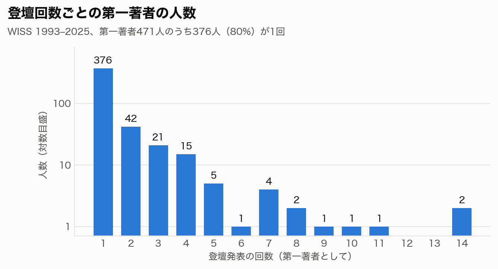
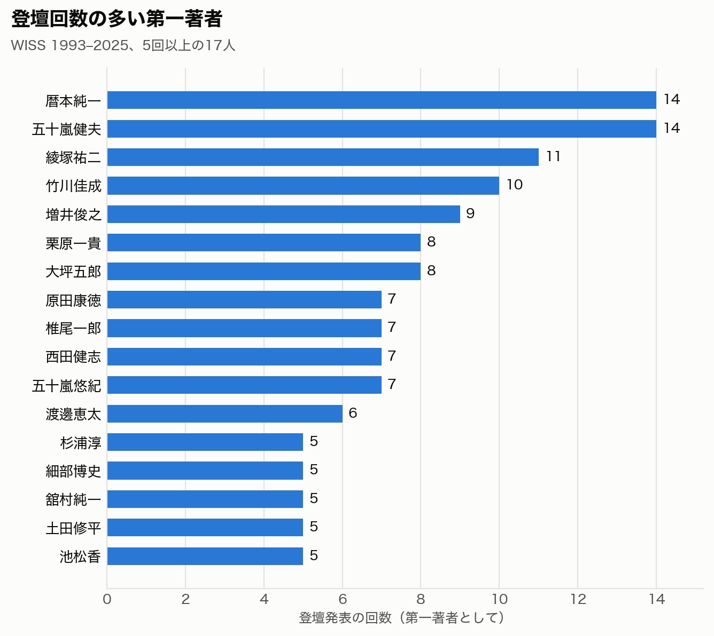
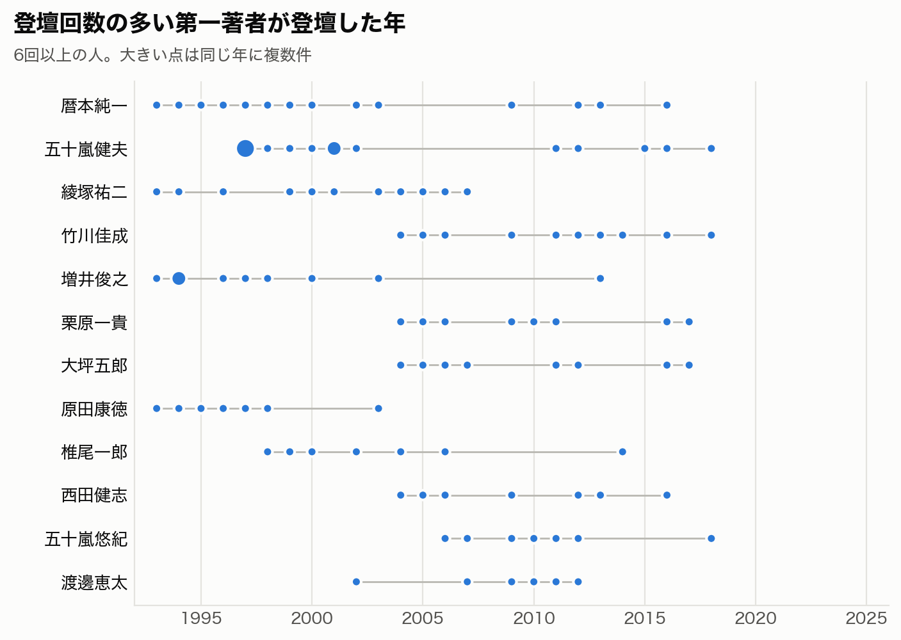
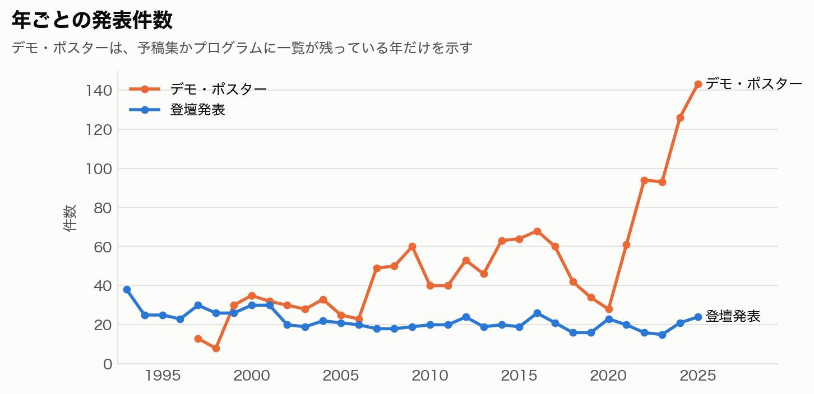
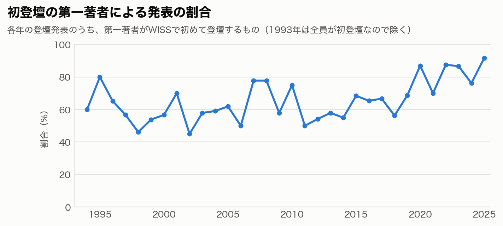
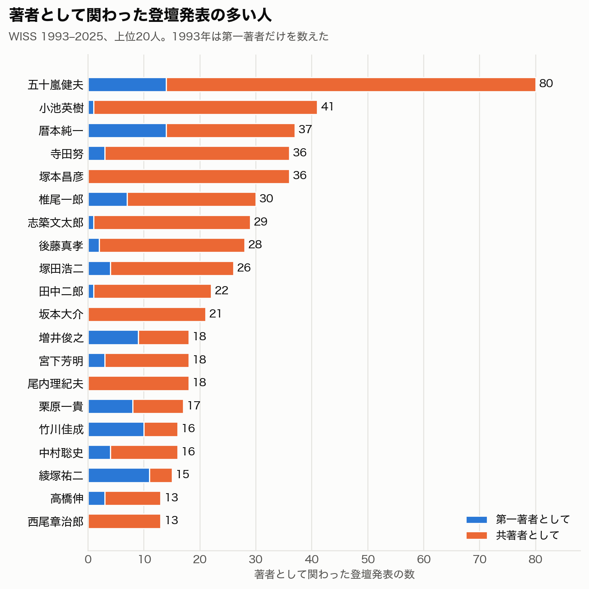
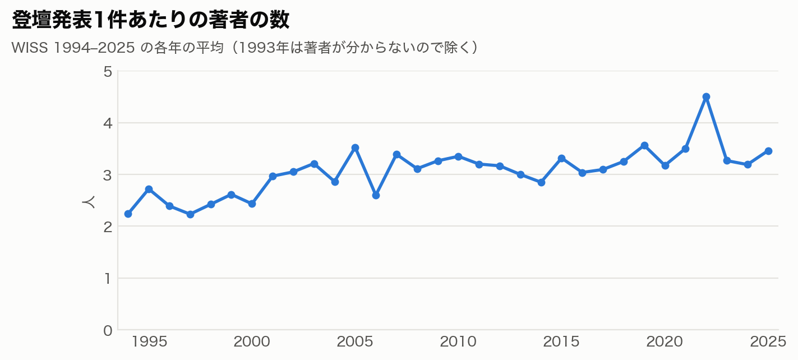
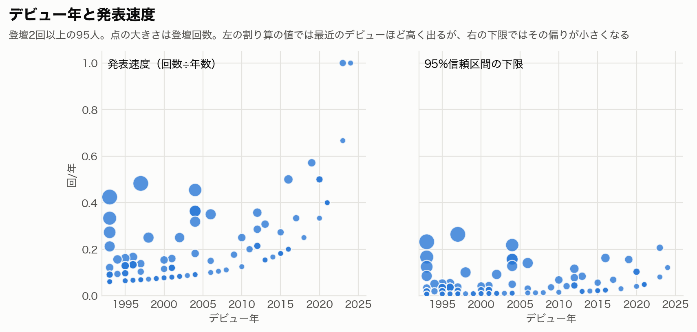
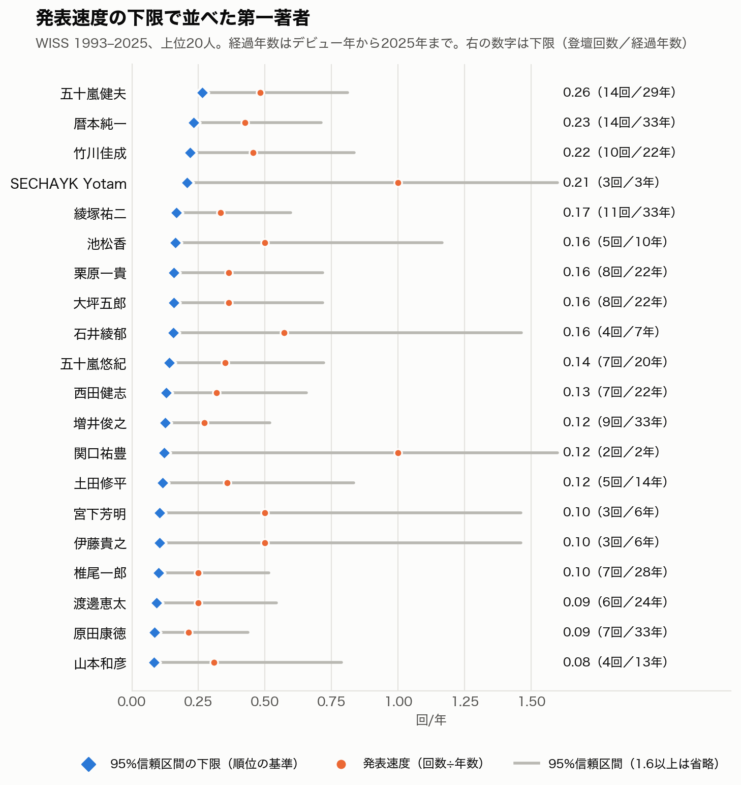
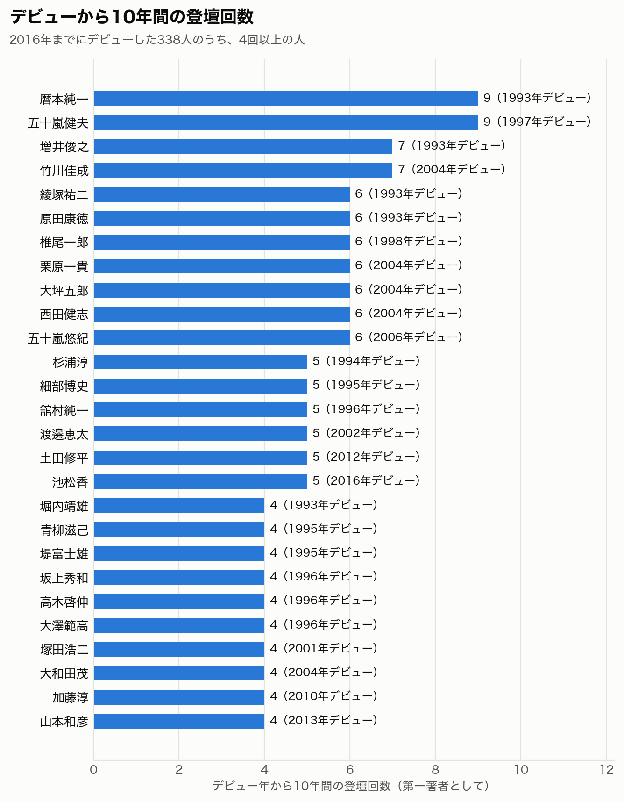

栗原一貴（津田塾大学）
HTML 版：https://qurihara.github.io/wiss-talk-stats/
471人のうち376人（80%）が1回。2回以上の95人の発表が全体の48%を占める

第一著者としての登壇回数

| 順位 | 第一著者 | 回数 | 期間 |
|---|---|---|---|
| 1 | 暦本純一 | 14 | 1993–2016 |
| 1 | 五十嵐健夫 | 14 | 1997–2018 |
| 3 | 綾塚祐二 | 11 | 1993–2007 |
| 4 | 竹川佳成 | 10 | 2004–2018 |
| 5 | 増井俊之 | 9 | 1993–2013 |
| 6 | 栗原一貴 | 8 | 2004–2017 |
| 6 | 大坪五郎 | 8 | 2004–2017 |
| 8 | 原田康徳 | 7 | 1993–2003 |
| 8 | 椎尾一郎 | 7 | 1998–2014 |
| 8 | 西田健志 | 7 | 2004–2016 |
6回以上の人。大きい点は同じ年に複数件

登壇発表は毎年15件から38件。デモ・ポスターは2025年に143件

平均は66%。2020年以降は70%から92%

登壇発表に関わった976人。青は第一著者として、橙は共著者として

| 著者 | 関わった数 | うち第一著者 |
|---|---|---|
| 五十嵐健夫 | 80 | 14 |
| 小池英樹 | 41 | 1 |
| 暦本純一 | 37 | 14 |
| 寺田努 | 36 | 3 |
| 塚本昌彦 | 36 | 0 |
| 椎尾一郎 | 30 | 7 |
| 志築文太郎 | 29 | 1 |
| 後藤真孝 | 28 | 2 |
| 塚田浩二 | 26 | 4 |
| 田中二郎 | 22 | 1 |
| 最終著者 | 回数 |
|---|---|
| 五十嵐健夫 | 57 |
| 小池英樹 | 35 |
| 塚本昌彦 | 26 |
| 椎尾一郎 | 22 |
| 田中二郎 | 21 |
| 暦本純一 | 20 |
| 後藤真孝 | 16 |
| 尾内理紀夫 | 15 |
| 宮下芳明 | 15 |
| 西尾章治郎 | 13 |
| 共著の組 | 回数 |
|---|---|
| 塚本昌彦・寺田努 | 32 |
| 五十嵐健夫・坂本大介 | 14 |
| 志築文太郎・田中二郎 | 12 |
| 寺田努・竹川佳成 | 10 |
| 中野倫靖・後藤真孝 | 10 |
| 暦本純一・綾塚祐二 | 9 |
| 塚本昌彦・西尾章治郎 | 9 |
| 寺田努・西尾章治郎 | 9 |
| 五十嵐健夫・稲見昌彦 | 9 |
| 浅川智恵子・高木啓伸 | 8 |
1990年代の平均の約2.4人から、2020年代の平均の約3.5人へ


菱形が下限（順位の基準）、丸が割り算の値、線が95%信頼区間

| 順位 | 第一著者 | 下限 | 回数／年数 |
|---|---|---|---|
| 1 | 五十嵐健夫 | 0.26 | 14回／29年 |
| 2 | 暦本純一 | 0.23 | 14回／33年 |
| 3 | 竹川佳成 | 0.22 | 10回／22年 |
| 4 | SECHAYK Yotam | 0.21 | 3回／3年 |
| 5 | 綾塚祐二 | 0.17 | 11回／33年 |
| 6 | 池松香 | 0.16 | 5回／10年 |
| 7 | 栗原一貴 | 0.16 | 8回／22年 |
| 7 | 大坪五郎 | 0.16 | 8回／22年 |
| 9 | 石井綾郁 | 0.16 | 4回／7年 |
| 10 | 五十嵐悠紀 | 0.14 | 7回／20年 |
2016年までにデビューした338人が対象

データとスクリプト：https://github.com/qurihara/wiss-talk-stats（スクリプトは MIT、表と図は CC BY 4.0）